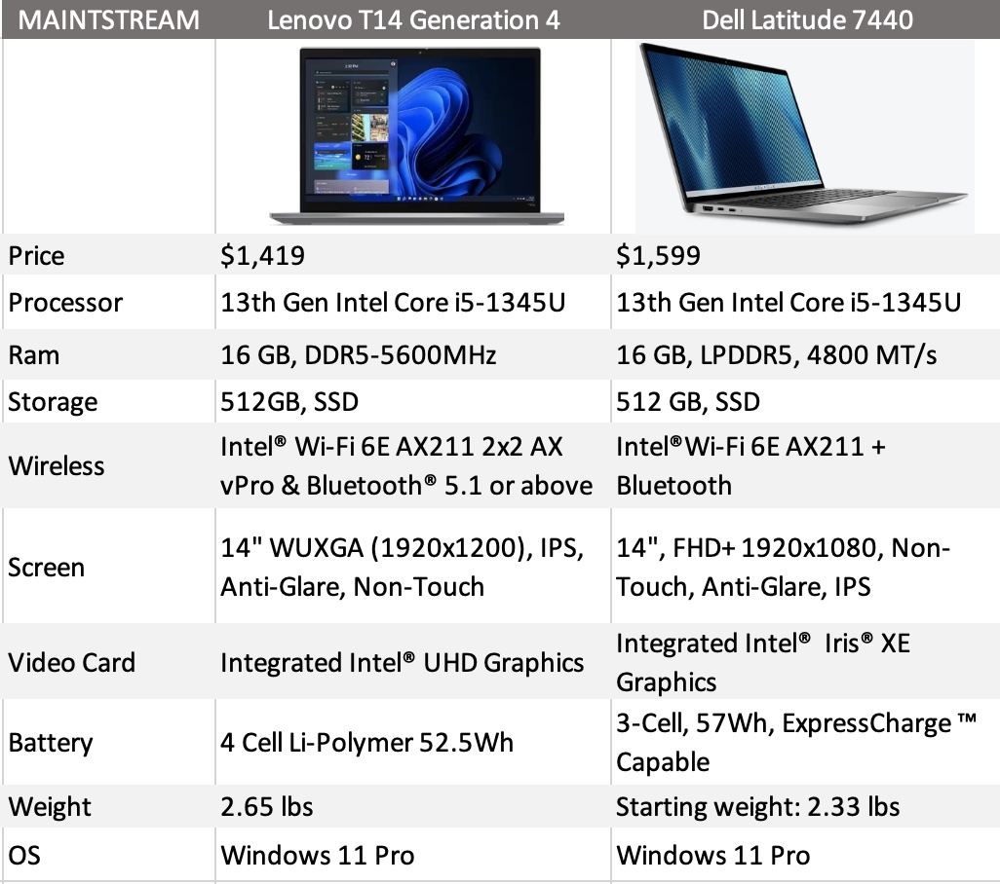

Part 2 of my blog
COMPUTER FEATURES
Laptops typically have a clamshell form factor with a flat panel screen (usually 11–17 in or 280–430 mm in diagonal size) on the inside of the upper lid and an alphanumeric keyboard and pointing device (such as a trackpad and/or trackpoint) on the inside of the lower lid, although 2-in-1 PCs with a detachable keyboard.laptop features include: Multitasking. A distinguishing feature of computers is their ability to multitask. ...
Storage. Computer systems have enormous amounts of storage space for all types of data.
Precision. A computer is extremely accurate.
Speed.
Quick decision. the image below shows an example:

The keyboard is one of the most important parts of the computer. There are four major types of Computer Keyboard used worldwide depending on their size and numbers of keys are QWERTY, AZERTY, DVORAK and QWERTZ.The most important thing for determining image quality is the resolution of the screen. The resolution determines how sharp everything appears on the screen. For example, you can see more details on a Full HD screen than on a screen with a lower resolution.There are essentially only two main competing screen technologies for laptops: LED vs OLED. LED and OLED displays are great in different areas. LED screens offer greater brightness and incredibly fast refresh rates, while OLED screens produce a greater contrast ratio and more accurate colors.